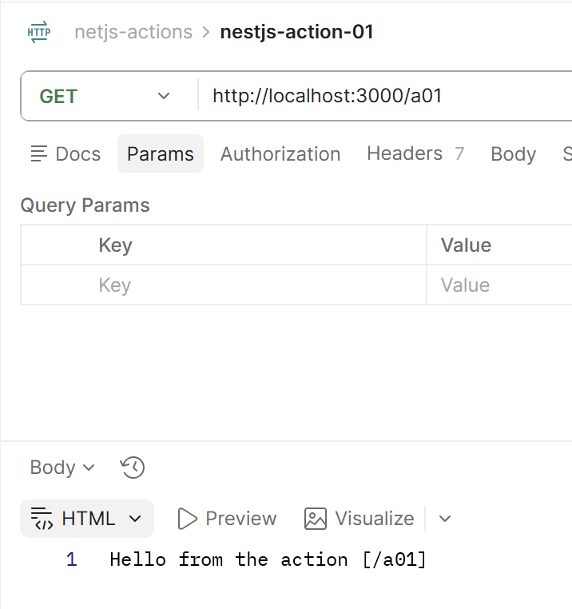
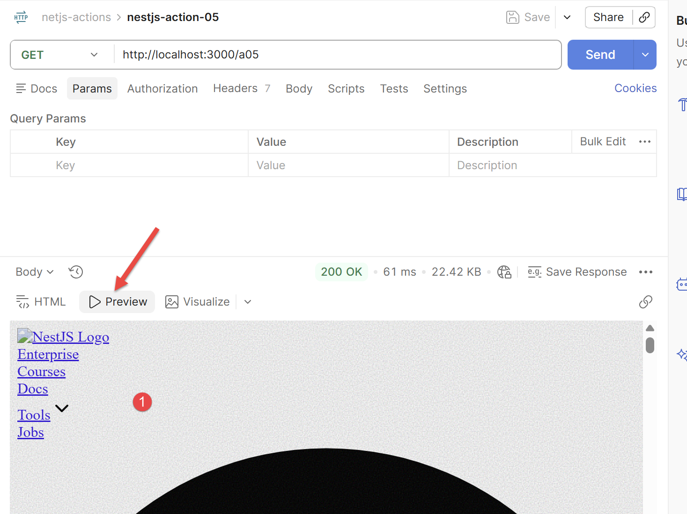
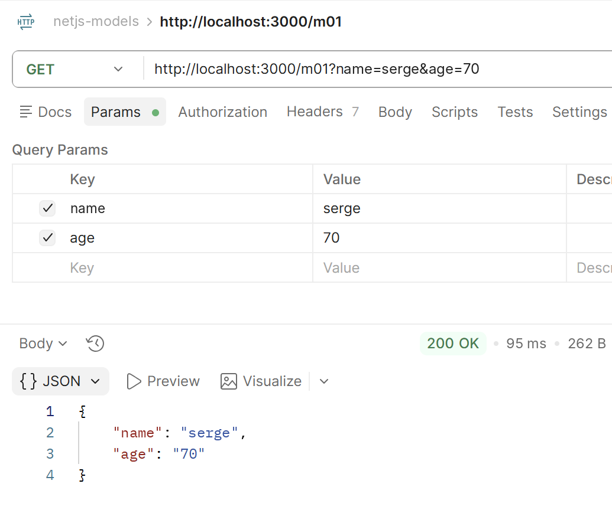
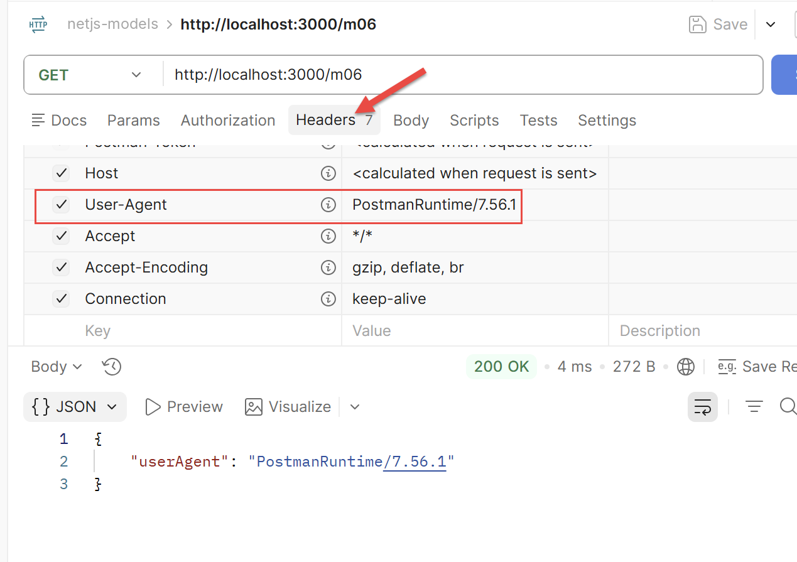
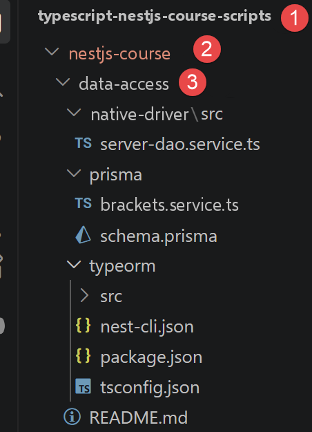
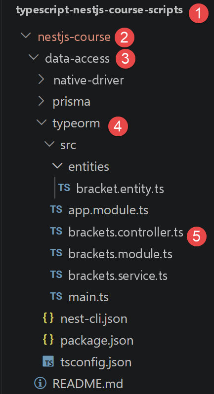

8. Introducción al framework web NestJS
8.1. Fuentes
Este curso se basa en las siguientes fuentes:
- el sitio web oficial de NestJS: https://nestjs.com y su documentación https://docs.nestjs.com;
- el repositorio GitHub del framework: https://github.com/nestjs/nest;
8.2. Herramientas utilizadas
- Node.js, versión LTS (18 o superior), y su gestor de paquetes npm;
- la CLI de NestJS (@nestjs/cli), una herramienta de línea de comandos que crea la estructura de un nuevo proyecto, genera archivos (controladores, servicios, módulos, etc.) a partir de una plantilla prediseñada e inicia el servidor de desarrollo;
- un editor de código: Visual Studio Code, con la extensión de TypeScript;
- un cliente (HTTP) para probar los endpoints (URL) expuestos: Postman, o simplemente el comando
curl; - un servidor de bases de datos MySQL.
8.3. El papel de NestJS en una aplicación web
NestJS es un framework de Node.js escrito en TypeScript, diseñado para construir el lado servidor de una aplicación web, con mayor frecuencia una API REST (JSON), a veces una aplicación GraphQL o en tiempo real (WebSockets). No reinventa el manejo del protocolo HTTP en sí: por defecto, se apoya en Express, un framework de Node.js más rudimentario encargado de recibir las solicitudes HTTP en bruto y responderlas (Fastify es una alternativa posible a Express). NestJS se sitúa por encima de este, aportando una organización del código que ni Node.js ni Express imponen por sí solos: división en módulos, controladores y servicios; inyección de dependencias; decoradores...
Su arquitectura está muy inspirada en Angular (decoradores, módulos, inyección de dependencias). La idea general es la de un único punto de entrada que recibe todas las solicitudes de la aplicación y luego las enruta al controlador adecuado según la acción solicitada; cada controlador, a su vez, se apoya en servicios que manejan la lógica de negocio y el acceso a los datos, en lugar de escribir este código directamente en el controlador.
NestJS está diseñado principalmente para generar respuestas JSON: por defecto, lo que devuelve un método de un controlador se convierte automáticamente a JSON y se envía al cliente, sin ninguna configuración especial; lo verificaremos en la primera acción del miniproyecto que sigue. La generación de vistas HTML del lado del servidor (con Handlebars, EJS o Pug) sigue siendo posible (de hecho, la usaremos un poco más adelante), pero es una opción, no el comportamiento por defecto.
8.4. El modelo de desarrollo MVC de NestJS
Tres conceptos forman la estructura de una aplicación NestJS:
- módulos (decorador @Module): un módulo agrupa un conjunto de funcionalidades relacionadas entre sí; declara qué controladores y servicios le pertenecen, de qué otros módulos depende y qué pone a disposición de los demás. Una aplicación NestJS siempre parte de un módulo raíz, AppModule, que ensambla todos los demás módulos del proyecto;
- controladores (decorador @Controller): un controlador es el punto de entrada de la aplicación: una clase en la que cada método recibe las solicitudes HTTP correspondientes a una URL específica y devuelve una respuesta al cliente;
- providers (el decorador @Injectable): un proveedor es una clase normal, normalmente responsable de la lógica de negocio o del acceso a datos, que NestJS puede crear automáticamente y proporcionar (es decir, “inyectar”) a cualquier controlador o servicio que lo necesite.
En la práctica, una clase que necesita un proveedor simplemente lo declara como parámetro de su constructor: NestJS crea la instancia necesaria y se la pasa automáticamente, sin que usted tenga que escribir nunca new por su cuenta. Esto se denomina inyección de dependencias basada en el constructor, una práctica que se utiliza casi siempre en NestJS. Veremos un ejemplo concreto en la línea siguiente.
8.4.1. Un primer proyecto NestJS
8.4.1.1. El proyecto de demostración
Un proyecto muy pequeño, con una sola acción [/hello], para explorar las herramientas.

8.4.1.2. Configuración del proyecto
Este proyecto ya está incluido y listo para usar en el directorio de scripts que descargó: es la carpeta nestjs-course/hello-nest/ que se muestra en la captura de pantalla anterior (etiqueta [3]), con todos sus archivos ya en su lugar. Por lo tanto, no necesita crear nada: simplemente abra esta carpeta existente en VSCode (ejecute npm install si aún no lo ha hecho; consulte la introducción de este documento) y continúe directamente con la siguiente sección.
Para su información, si quisiera volver a crear este proyecto usted mismo desde cero (en una carpeta vacía, fuera de la estructura de directorios del curso), así es como se generó:
Este comando genera un proyecto que contiene los siguientes archivos esenciales:
8.4.1.3. La arquitectura de una aplicación NestJS
Estos cuatro archivos por sí solos ilustran la arquitectura MVC de NestJS: un punto de entrada (main.ts), un módulo raíz (app.module.ts), un controlador (app.controller.ts) y un servicio (app.service.ts).
8.4.1.4. El controlador C
src/app.service.ts
Comentemos este código:
- línea 1: [// src/app.service.ts] — un simple comentario que indica el archivo correspondiente, sin efecto en la ejecución; útil para orientarse cuando se muestran varios archivos seguidos.
- línea 2: [import { Injectable } from '@nestjs/common';] — como en TypeScript estándar, se importa explícitamente cada elemento utilizado, en este caso desde @nestjs/common, el módulo que contiene la mayoría de los decoradores y clases de utilidad de NestJS.
- línea 4: [@Injectable()] — un decorador es una anotación colocada inmediatamente encima de una clase, un método o un parámetro de TypeScript (precedida por el símbolo @), que modifica o amplía su comportamiento sin alterar su código; es el mecanismo en el que se basa prácticamente todo el vocabulario de NestJS. @Injectable() marca esta clase como un proveedor: NestJS la creará por sí mismo y la proporcionará automáticamente a cualquier otra clase que la solicite en su constructor, sin tener que escribir nunca new AppService().
- línea 5: [export class AppService {] — una clase normal de TypeScript, exportada para poder importarla en otro lugar (aquí, en el controlador); no hay nada específico de NestJS en este punto, aparte del decorador que la precede.
- línea 6: [ getHello(): string {] — un método normal; : string declara el tipo del valor de retorno, una característica específica de TypeScript que no existe en JavaScript.
- línea 7: [ return 'Hello, world!';] — el contenido que realmente se devuelve; por ahora, una simple cadena fija.
src/app.controller.ts
Comentemos este código:
- línea 1: [// src/app.controller.ts] — la misma observación que antes: un comentario sin efecto en la ejecución.
- línea 2: [import { Controller, Get } from '@nestjs/common';] — importa los dos decoradores que se usan más adelante: @Controller (para la clase) y @Get (para un método).
- línea 3: [import { AppService } from './app.service';] — importa el servicio definido justo antes, para poder inyectarlo en el constructor que aparece a continuación.
- línea 5: [@Controller()] — @Controller() decora la clase siguiente para convertirla en un controlador: NestJS le enviará las solicitudes HTTP correspondientes a sus rutas. El argumento entre paréntesis es un prefijo opcional que se agrega al inicio de todas las rutas de la clase: con @Controller('api'), un método decorado con @Get('x') respondería a /api/x. Aquí el prefijo está vacío: la ruta “hello”, definida más abajo, responde por lo tanto directamente en /hello.
- línea 6: [export class AppController {] — la clase del controlador, denominada por convención <Name>Controller.
- línea 7: [ constructor(private readonly appService: AppService) {}] — el constructor declara un parámetro appService de tipo AppService, precedido por el modificador de TypeScript private readonly, que, en una sola línea, lo declara Y lo registra como propiedad de la instancia (this.appService). NestJS detecta que el controlador necesita un AppService, crea una instancia (una sola, compartida por toda la aplicación) y la proporciona automáticamente aquí: esta es la inyección de dependencias basada en el constructor mencionada anteriormente; usted nunca escribe
new AppService(). - línea 9: [ @Get('hello')] — @Get('hello') asocia el método siguiente con la ruta HTTP GET /hello: este decorador es el que hace que la acción sea accesible en la dirección que se puede probar http://localhost:3000/hello una vez que el servidor está en ejecución. Existen otros decoradores con el mismo propósito para los demás verbos: @Post(), @Put(), @Delete(), @Patch(), que veremos en detalle en el próximo capítulo.
- línea 10: [ hello(): string {] — el nombre del método,
hello, no tiene ninguna conexión inherente con la ruta: NestJS lo invoca únicamente porque está decorado con@Getjusto encima. Darle un nombre que refleje la acción es simplemente una convención para facilitar la lectura. - línea 11: [ return this.appService.getHello();] — el controlador delega el trabajo en el servicio inyectado en lugar de codificar la respuesta por sí mismo: sigue siendo una simple capa de enrutamiento, mientras que la lógica de negocio reside en el servicio.
src/app.module.ts
Comentemos este código:
- línea 1: [// src/app.module.ts] — nuevamente el mismo tipo de comentario con fines de identificación, sin efecto en la ejecución.
- línea 2: [import { Module } from '@nestjs/common';] — importa el decorador @Module que se usa en la línea 6.
- línea 6: [@Module({] — @Module({...}) decora la clase siguiente para convertirla en un módulo: agrupa una parte coherente de la aplicación y declara, en el objeto pasado como argumento, de qué se compone. Son posibles cuatro propiedades (aquí usamos solo dos): controllers (los controladores expuestos por este módulo), providers (los servicios proporcionados por este módulo, disponibles para inyección dentro del módulo), imports (los demás módulos de los que depende este) y exports (los proveedores que este módulo pone a disposición de los módulos que lo importan).
- línea 7: [ controllers: [AppController],] — declara que AppController, definido anteriormente, pertenece a este módulo; sin esta declaración, NestJS ignoraría este controlador y sus rutas no responderían a ninguna solicitud.
- línea 8: [ providers: [AppService],] — de manera similar, declara que AppService pertenece a este módulo, de modo que queda disponible para la inyección de dependencias; es este arreglo el que permite que el controlador lo reciba en su constructor.
- línea 10: [export class AppModule {}] — el módulo raíz de la aplicación, denominado por convención AppModule: es el que main.ts utiliza para iniciar el servidor.
8.4.1.5. Ejecución
Cuando abre http://localhost:3000/hello en un navegador, obtiene la respuesta “Hello, world!”. El decorador @Get('hello') asigna el método hello() al endpoint /hello de la URL; NestJS envía la cadena devuelta tal cual. De forma predeterminada, npm run start:dev inicia el servidor en el puerto 3000; este es el puerto que veremos en todos los ejemplos de los capítulos siguientes.
8.4.1.6. Conclusión
El trío controlador/servicio/módulo que acabamos de escribir es la columna vertebral de cualquier aplicación NestJS; es la estructura que veremos, a mayor escala, en los capítulos siguientes y en el caso de estudio del Capítulo 6.
8.4.2. La arquitectura MVC de NestJS
8.4.2.1. Los módulos
El decorador @Module acepta cuatro propiedades principales: imports (los demás módulos de los que depende este módulo), controllers (los controladores que expone), providers (los servicios que proporciona, tanto para sí mismo como para los módulos que lo importan) y exports (los proveedores que pone a disposición de otros módulos). Una aplicación NestJS es un árbol de módulos, con un módulo raíz, AppModule, que los ensambla todos al iniciar, de manera similar a una vista general del proyecto (los lectores familiarizados con Spring reconocerán aquí el papel de un archivo de configuración central).
8.4.2.2. Controladores
Un controlador es una clase anotada con @Controller(prefix): recibe solicitudes HTTP y devuelve una respuesta al cliente. El prefix, que es opcional, se antepone a todas las rutas de la clase: con @Controller('users'), un método decorado con @Get(':id') respondería a /users/:id, y no a /:id. Cada método del controlador se asocia con una ruta mediante un decorador correspondiente al verbo deseado: @Get para leer, @Post para crear, @Put para reemplazar, @Patch para modificar parcialmente y @Delete para eliminar. La ruta de acceso puede contener segmentos variables, introducidos por :, como en @Get('users/:id') (:id captura entonces el valor presente en esa posición de la URL solicitada). En el próximo capítulo veremos en detalle los decoradores que permiten obtener la información proporcionada por la solicitud (@Query, @Param, @Body...).
8.4.2.3. Proveedores e inyección de dependencias
Una clase anotada con @Injectable() es un proveedor: NestJS la instancia e inyecta automáticamente dondequiera que se solicite en un constructor, siempre que figure en el arreglo providers de un módulo (el propio o el de un módulo que la exporte). De forma predeterminada, un proveedor de NestJS es un singleton: se crea una única instancia al iniciar la aplicación y esa misma instancia se comparte entre todos los componentes que la necesitan, en lugar de volver a crear una nueva instancia para cada solicitud (los lectores familiarizados con Spring reconocerán aquí el comportamiento predeterminado de un bean).
8.4.2.4. Comparación resumida con Spring MVC
La tabla siguiente es solo informativa: está dirigida a los lectores que ya conocen Spring MVC y desean aprovechar sus conocimientos previos. No es necesario entenderla para seguir el resto de este curso; todos los términos de NestJS que se enumeran aquí se explican, de forma independiente de Spring, en este capítulo y en los siguientes.
- @Controller (Spring) ↔ @Controller (NestJS)
- @GetMapping / @RequestMapping (Spring) ↔ @Get(), @Post()... (NestJS)
- @RequestParam (Spring) ↔ @Query() (NestJS)
- @PathVariable (Spring) ↔ @Param() (NestJS)
- @RequestBody (Spring) ↔ @Body() (NestJS)
- @Service / @Repository + @Autowired (Spring) ↔ @Injectable() + inyección por constructor (NestJS)
- archivo de configuración / escaneo de componentes (Spring) ↔ @Module (NestJS)
- ResponseEntity<T> (Spring) ↔ objeto devuelto directamente, o @Res() para un control total (NestJS)
8.5. Acciones: la respuesta

Este capítulo explora, acción por acción, las distintas formas en que un controlador de NestJS puede construir la respuesta enviada al cliente. Cada acción se puede probar con curl o Postman en un nuevo proyecto creado con nest new actions-response; como en el capítulo anterior, npm run start:dev inicia el servidor en el puerto 3000, por lo que todas las URL de las acciones siguientes tienen la forma http://localhost:3000/.... Todas las acciones de este capítulo son métodos de un único controlador, AppController, anotado con @Controller() sin prefijo; como en el capítulo anterior, el argumento entre paréntesis de @Get(...) en cada acción proporciona, por lo tanto, directamente su URL.
8.5.1. Componentes de la aplicación NestJS
La aplicación consta de tres archivos (véase 4 arriba)
8.5.1.1. src/app.controller.ts
Este archivo reúne seis métodos en una sola clase, AppController, con los decoradores (Header, HttpCode, Redirect, Res) que usan uno o varios de estos métodos agrupados al inicio del archivo.
Volveremos a estos seis métodos un poco más adelante.
8.5.1.2. src/app.module.ts
Comentemos este código:
- línea 5: @Module({ — a diferencia del módulo raíz del proyecto hello-nest visto en el capítulo anterior, aquí no hay ninguna propiedad
providers: este proyecto no define ningún servicio; toda la lógica está contenida en los propios métodos del controlador. - línea 6: controllers: [AppController], — la única declaración necesaria: asocia AppController, y por lo tanto sus seis rutas, con este módulo.
8.5.1.3. src/main.ts
El punto de entrada es el mismo en todos los proyectos: usa exactamente el mismo esqueleto bootstrap() que en el proyecto hello-nest del capítulo anterior, que crea la aplicación a partir del módulo raíz y luego escucha en el puerto 3000.
8.5.1.4. [/a01]: Devolver texto
Comentemos este código:
- línea 1: [@Get('a01')] — @Get('a01') asocia este método con la ruta GET /a01 ; como en el capítulo anterior, este decorador vincula una URL con un método. Por lo tanto, esta acción es accesible en http://localhost:3000/a01 una vez iniciado el servidor (npm run start:dev).
- línea 2: [a01(): string {] — el nombre del método, a01, no tiene ninguna conexión inherente con la ruta: NestJS lo invoca únicamente porque está decorado con @Get justo encima. Darle el mismo nombre que la acción, como se hace en todo este capítulo, es simplemente una convención para facilitar la lectura, adoptada para encontrar fácilmente la acción correspondiente a una URL.
- línea 3: [ return 'Hello from the action [/a01]';] — el método simplemente devuelve una cadena.
NestJS envía la cadena devuelta tal cual al cliente, con un encabezado Content-Type establecido en text/html.
8.5.1.5. [/a02]: Devolver un objeto serializado automáticamente a JSON
Comentemos este código:
- línea 1: [@Get('a02')] — accesible en http://localhost:3000/a02.
- línea 2: [a02(): object {] — esta vez, el método declara que devuelve un object en lugar de un string ; este tipo de retorno es lo que cambiará el comportamiento de NestJS, como se verá más abajo.
- línea 3: [ return { message: 'Hello', value: 42 };] — un literal de objeto de JavaScript/TypeScript, con dos propiedades.
Tan pronto como un método devuelve un objeto (o un arreglo), NestJS lo serializa automáticamente a JSON y establece el encabezado Content-Type en: application/json ; no necesita hacer nada especial para obtener una respuesta JSON, a diferencia de la cadena de [/a01], que produce texto sin formato.
8.5.1.6. [/a03]: Cambiar el código de estado HTTP
Analicemos este código:
- línea 1: [import { Get, HttpCode } from '@nestjs/common';] — importa los dos decoradores que se usan a continuación.
- línea 3: [@Get('a03')] — accesible en http://localhost:3000/a03. De forma predeterminada, una acción @Get responde con el código de estado HTTP 200 (el número de tres dígitos que se devuelve con cada respuesta e indica al cliente si la solicitud tuvo éxito: 200: éxito, 404: recurso no encontrado, 500: error del servidor, etc.).
- línea 4: [@HttpCode(201)] — @HttpCode(201) fuerza explícitamente el código de estado devuelto por esta acción, en este caso 201 (Created), en lugar del 200 predeterminado; es una elección puramente didáctica para ilustrar el decorador, que normalmente se reservaría para una acción que efectivamente crea un recurso (típicamente un @Post en lugar de un @Get). Un navegador estándar no muestra el código de estado recibido; para verificarlo, use Postman o la pestaña Red (Network) de las herramientas para desarrolladores.
8.5.1.7. [/a04]: Agregar un encabezado HTTP
Comentemos este código:
- línea 1: [import { Get, Header } from '@nestjs/common';] — importa los dos decoradores que se usan a continuación.
- línea 3: [@Get('a04')] — accesible en http://localhost:3000/a04.
- línea 4: [@Header('X-My-Header', 'a-value')] — un encabezado (HTTP) es información adicional enviada con la respuesta, independiente del cuerpo del mensaje; el Content-Type mencionado anteriormente es un ejemplo estándar. @Header(name, value) agrega aquí un encabezado personalizado, X-My-Header, con el valor a-value. Al igual que con el código de estado, un navegador estándar no muestra de forma predeterminada los encabezados recibidos: se necesita Postman o las herramientas para desarrolladores para verlos.
8.5.1.8. [/a05]: Redirigir al cliente
Comentemos este código:
- línea 1: [import { Get, Redirect } from '@nestjs/common';] — importa los dos decoradores que se usan a continuación.
- línea 3: [@Get('a05')] — accesible en http://localhost:3000/a05 ; al abrirla en un navegador, esta URL redirige de inmediato a https://nestjs.com.
- línea 4: [@Redirect('https://nestjs.com', 302)] — @Redirect(url, code) hace que la acción responda con una redirección HTTP a url, con el código de estado code (302, Found, es el valor predeterminado si se omite este segundo argumento); el navegador sigue automáticamente esta redirección sin intervención del usuario.
- línea 5: [a05() {}] — el cuerpo del método está vacío: todo el trabajo lo realiza el decorador @Redirect que se encuentra justo encima; el método en sí no tiene nada que devolver.
8.5.1.9. [/a06]: Acceso directo al objeto de respuesta de Express
Comentemos este código:
- línea 1: [import { Get, Res } from '@nestjs/common';] — importa el decorador @Res que se usa en la línea 5, además del ya conocido @Get.
- línea 2: [import { Response } from 'express';] — importa el tipo Response de TypeScript proporcionado por Express (el servidor HTTP en el que se apoya NestJS de forma predeterminada; véase el capítulo “Introducción”), que se usa para tipar el parámetro siguiente.
- línea 4: [@Get('a06')] — accesible en http://localhost:3000/a06.
- línea 5: [a06(@Res() res: Response): void {] — @Res() pasa directamente el objeto de respuesta sin procesar de Express como argumento del método, denominado res aquí. Es lo opuesto de [/a01]/[/a02]: en lugar de dejar que NestJS construya la respuesta a partir del valor devuelto, aquí el código toma el control total de toda la respuesta HTTP.
- línea 6: [ res.status(200).json({ response: 'built by hand' });] — llama directamente a los métodos de la API de Express: status(200) establece el código de estado y json({...}) serializa el objeto a JSON y envía efectivamente la respuesta (estos dos pasos normalmente son automáticos, como en [/a02]).
Ejecución de la aplicación NestJS

En un terminal, en la raíz del proyecto, escriba el comando:
Recibirá la siguiente respuesta:
8.5.2. Pruebas con Postman
Para las pruebas con Postman, puede usar la siguiente colección de solicitudes:

Estas son las pruebas de Postman para las seis acciones:
8.5.2.1. Acción a01

8.5.2.2. Acción a02

8.5.2.3. Acción a04

Para ver el encabezado enviado por el servidor:

8.5.2.4. Acción a05

En [1], el sitio al que fue redirigido el cliente Postman.
8.5.2.5. Acción a06

8.5.3. Conclusión
NestJS ofrece, por lo tanto, dos enfoques para construir una respuesta: dejar que el framework la construya automáticamente a partir del valor devuelto por el método (el caso más habitual, ilustrado por [/a01] a [/a05]) o bien, mediante @Res(), tomar el control total y manual de la respuesta HTTP, a costa de tener que gestionarlo todo usted mismo ([/a06]).
8.6. Acciones: el modelo

Este capítulo es el complemento del anterior: ya no se trata de construir la respuesta, sino de obtener la información proporcionada por la solicitud del cliente (parámetros de la URL, cuerpo enviado, encabezados, etc.). Como en el capítulo anterior, todas las acciones son métodos del mismo controlador AppController anotado con @Controller() sin prefijo, y el servidor escucha de forma predeterminada en el puerto 3000; por lo tanto, todas las URL siguientes tienen la forma http://localhost:3000/....
8.6.1. Los componentes de la aplicación NestJS
Veamos con más detalle los archivos (véase 4 arriba) que componen el proyecto actions-model.
8.6.1.1. src/app.controller.ts
Una sola clase, AppController, contiene ocho métodos, con todos los decoradores (@Query, @Param, @Body, @Headers, @Session, @Req) y el CalculationDto (véanse [/m04] y [/m05]) que utilizan uno o varios de ellos. Hablaremos de estos métodos en breve.
8.6.1.2. src/app.module.ts
La misma observación que en el capítulo anterior: tampoco hay providers aquí, ya que este proyecto no define servicios independientes.
8.6.1.3. src/main.ts
Comentemos este código:
- línea 9: app.use(session({ secret: 'xxx', resave: false, saveUninitialized: false })); — instala el middleware de Express
express-session; es esta línea, que aparece una sola vez aquí y se aplica a toda la aplicación, la que habilita el contador de sesión que se ve en [/m07]. El secret se usa para firmar la cookie de sesión; en producción debe provenir de una variable de entorno y nunca debe escribirse en texto plano en el código. - líneas 10–15: app.useGlobalPipes(new ValidationPipe({ ... })); — declara globalmente, para todos los controladores de la aplicación, el mismo ValidationPipe que se aplicó localmente a [/m05] con @UsePipes. Las dos opciones
transform: trueyenableImplicitConversion: truehabilitan la conversión automática de tipos (concretamente, de cadenas de laURLa números) antes de la validación.
8.6.1.4. [/m01]: parámetros de un GET
Comentemos este código:
- línea 1: [@Get('m01')] — como en el capítulo anterior, este decorador asocia el método con la ruta GET /m01.
- línea 2: [m01(@Query('name') name: string, @Query('age') age: string): object {] — @Query(name) es un nuevo decorador, aplicado esta vez a un parámetro del método en lugar de a la clase o al método mismo: extrae un parámetro de la cadena de consulta (query string) (la parte de la URL posterior al ?, en forma de clave=valor separados por &) y lo proporciona directamente como argumento, ya con nombre y tipo, sin que usted tenga que obtenerlo por sí mismo. Aquí, @Query('name') extrae el parámetro "name" y lo asigna a la variable
name, y lo mismo ocurre conage. Por lo tanto, esta acción se puede probar en http://localhost:3000/m01?name=Serge&age=60, que devolverá name = "Serge" y age = "60" (un valor de la cadena de consulta siempre se recibe como cadena, aunque parezca un número). - línea 3: [ return { name, age };] — notación abreviada de { name: name, age: age }: cuando el nombre de la propiedad y el de la variable son idénticos, basta con escribir el nombre una sola vez.
8.6.1.5. [/m02]: elementos de una URL
Comentemos este código:
- línea 1: [@Get('m02/:id')] — el :id de la ruta es un segmento variable (un parámetro de ruta): NestJS captura lo que aparece en esa posición específica de la URL solicitada. Una solicitud a http://localhost:3000/m02/5 captura, por lo tanto, 5; una solicitud a /m02/abc capturaría abc.
- línea 2: [m02(@Param('id') id: string): object {] — @Param(name) es el decorador complementario de @Query, visto en [/m01]: mientras que @Query lee la cadena de consulta (después del ?), @Param lee un segmento variable de la propia ruta (aquí: id). @Param('id') inyecta, por lo tanto, el valor capturado en la variable id.
- línea 3: [ return { id };] — simplemente devuelve el valor recibido, encapsulado en un objeto.
8.6.1.6. [/m03]: parámetros de un POST
Comentemos este código:
- línea 1: [@Post('m03')] — @Post() es el decorador equivalente a @Get() para el verbo HTTP POST, que normalmente se usa para enviar datos al servidor (crear un recurso, enviar un formulario, etc.) en lugar de para leer una simple URL. A diferencia de las acciones anteriores, esta no se puede probar escribiendo simplemente la URL en un navegador (que solo realiza solicitudes GET): se necesita un cliente capaz de enviar una solicitud POST
- línea 2: [ m03(@Body() body: any): object {] — @Body(), sin argumentos, inyecta esta vez todo el cuerpo de la solicitud (a diferencia de @Query/@Param, que leen cada uno un único campo con nombre);
anyes el tipo deTypeScriptque significa “cualquier tipo”, usado aquí porque aún no se ha impuesto ningún formato específico a los datos recibidos (véase[/m04]para una versión tipada). - línea 3: [ return body;] — devuelve el cuerpo recibido tal cual, para verificar lo que se envió.
8.6.1.7. [/m04]: Asignar los parámetros enviados a una clase
dto/calculation.dto.ts
Comentemos este código:
- línea 1: [// dto/calculation.dto.ts] — un comentario para identificar el archivo; no tiene efecto en la ejecución.
- línea 2: [export class CalculationDto {] — una clase que describe únicamente el formato de los datos esperados, sin ningún método; esto se denomina DTO (Data Transfer Object), una estructura de datos tipada simple que se usa para transferir información de una parte del programa a otra (en este caso, del cliente al controlador).
- línea 3: [ married: string;] — una propiedad tipada: married debe ser una cadena; TypeScript comprobará este tipo en tiempo de compilación.
- línea 4: [ children: number;] — “children” debe ser un número.
- línea 5: [ salary: number;] — El salario debe ser un número.
Analicemos este código:
- línea 1: [@Post('m04')] — la misma observación que para [/m03]: pruébelo con Postman o con curl, no directamente en la barra de direcciones de un navegador.
- línea 2: [m04(@Body() data: CalculationDto): CalculationDto {] — sigue siendo @Body(), como en [/m03], pero esta vez la variable
dataestá tipada como CalculationDto en lugar deany: NestJS convierte automáticamente el JSON recibido en una instancia de esta clase, con sus propiedades con nombre y tipo (married, children, salary) en lugar de un objeto genérico sin tipo, lo que permite la validación por parte del compilador de TypeScript y el autocompletado en el editor. Nota: en esta etapa, todavía no hay garantía de que los datos recibidos se ajusten realmente a este formato (un cliente podría enviar cualquier cosa); consulte[/m05]para la validación real.
8.6.1.8. [/m05]: Validación del modelo de la acción
Instalamos dos bibliotecas complementarias de NestJS para la validación:
dto/calculation.dto.ts
Comentemos este código:
- línea 1: [import { IsIn, IsInt, Min } from 'class-validator';] — class-validator es una biblioteca independiente de NestJS (pero muy utilizada con él) que permite definir reglas de validación directamente sobre las propiedades de una clase mediante decoradores, como @IsIn, @IsInt, y Min, que se importan aquí.
- línea 4: [ @IsIn(['yes', 'no'])] — @IsIn([...]) exige que el valor de la propiedad siguiente (married) forme parte de la lista dada; en este caso, solo 'yes' o 'no'; cualquier otro valor será rechazado.
- línea 7: [ @IsInt() @Min(0)] — se pueden aplicar dos decoradores a la misma propiedad, uno después del otro: @IsInt() exige un entero y @Min(0) exige un valor mayor o igual que 0; ambas reglas se aplican conjuntamente a “children”.
Comentemos este código:
- línea 1: [import { Body, Post, UsePipes, ValidationPipe } from '@nestjs/common';] — importa, además de los decoradores ya conocidos, UsePipes y ValidationPipe
- línea 3: [@Post('m05')] — se prueba con Postman o con curl (POST), no en la barra de direcciones de un navegador.
- línea 4: [@UsePipes(new ValidationPipe())] — un pipe. En NestJS es un mecanismo que se interpone entre la solicitud recibida y el código del método para transformar o validar los datos antes de que lleguen al controlador. ValidationPipe, proporcionado por NestJS, es el pipe de validación estándar: evalúa los decoradores de class-validator aplicados al DTO (@IsIn, @IsInt, @Min...) y rechaza automáticamente cualquier solicitud cuyos datos no los cumplan, con una respuesta HTTP 400 (Bad Request), sin que tenga que escribir una sola instrucción
ifpor su cuenta. @UsePipes() es el decorador que habilita un pipe en un método específico.
8.6.1.9. [/m06]: Acceso a un encabezado HTTP
Comentemos este código:
- línea 1: [@Get('m06')] — accesible en http://localhost:3000/m06.
- línea 2: [m06(@Headers('user-agent') userAgent: string): object {] — @Headers(name) lee un encabezado HTTP específico de la solicitud entrante (a diferencia de @Header(), tratado en el capítulo anterior, que agregaba un encabezado a la respuesta saliente: misma palabra, significado opuesto según se esté leyendo o escribiendo). Aquí, @Headers('user-agent') obtiene el encabezado User-Agent (el nombre del navegador o de la herramienta que envió la solicitud, enviado automáticamente por cualquier cliente). Sin argumento, @Headers() devolvería un objeto con todos los encabezados de la solicitud.
- línea 3: [ return { userAgent };] — devuelve el valor leído, encapsulado en un objeto.
8.6.1.10. [/m07]: Acceso a la sesión
main.ts
Comentemos este código:
- línea 2: [app.use(session({ secret: 'xxx', resave: false, saveUninitialized: false }));] — app.use(...) registra un middleware de Express, un proceso que se ejecuta para cada solicitud entrante antes de que llegue a cualquier controlador. Aquí, el middleware session (proporcionado por la biblioteca express-session) configura la gestión de sesiones para toda la aplicación:
secretse usa para firmar la cookie de sesión (para evitar que sea manipulada), yresaveysaveUninitializedson opciones que controlan cuándo se guarda realmente la sesión en el servidor.
Analicemos este código:
- línea 1: [import { Get, Session } from '@nestjs/common';] — importa el decorador @Session
- línea 3: [@Get('m07')] — accesible en http://localhost:3000/m07 ; al actualizar la página varias veces, el contador se incrementa; su valor se conserva en el servidor entre solicitudes.
- línea 4: [m07(@Session() session: Record<string, any>): object {] — una sesión es un espacio de almacenamiento asociado con un visitante específico, mantenido en el servidor a lo largo de varias solicitudes sucesivas , a diferencia de una variable ordinaria, que se reiniciaría con cada nueva solicitud. El cliente se identifica mediante una cookie que contiene un identificador de sesión, que el navegador envía automáticamente con cada solicitud una vez que la ha recibido. @Session() inyecta directamente este espacio de almacenamiento como argumento del método.
- línea 5: [ session.counter = (session.counter ?? 0) + 1;] — el operador ?? (fusión de nulos) devuelve su lado derecho solo si el lado izquierdo es null o undefined ; aquí inicializa el contador en 0 en la primera visita, antes de incrementarlo en 1 en cada solicitud posterior.
- línea 6: [ return { counter: session.counter };] — devuelve el valor actual del contador, almacenado en la sesión.
Este es exactamente el express-session que usamos en el Capítulo 6 para almacenar la autenticación y la lista de simulaciones del servidor de cálculo de impuestos.
8.6.1.11. [/m08]: Acceso a la solicitud completa
Analicemos este código:
- línea 1: [import { Get, Req } from '@nestjs/common';] — importa el decorador @Req
- línea 2: [import { Request } from 'express';] — importa el tipo Request de TypeScript proporcionado por Express, para tipar el parámetro siguiente.
- línea 4: [@Get('m08')] — disponible en http://localhost:3000/m08.
- línea 5: [m08(@Req() req: Request): object {] — @Req() inyecta directamente el objeto de solicitud sin procesar de Express, con todo lo que contiene (método, URL, encabezados, cuerpo, parámetros...), en lugar de una sola información a la vez como @Query, @Param, @Body, @Headers o @Session. Del lado de la solicitud, es el equivalente exacto de lo que @Res() era del lado de la respuesta en [/a06] en el capítulo anterior: menos automatización por parte de NestJS, pero acceso total y sin concesiones.
- línea 6: [ return { method: req.method, url: req.url };] — lee directamente dos propiedades del objeto de solicitud de Express: method (el verbo HTTP utilizado) y url (la ruta solicitada).
Ejecución de la aplicación NestJS

En un terminal, en la raíz del proyecto, escriba el comando:
Recibirá la siguiente respuesta:
8.6.2. Pruebas con Postman
Para las pruebas con Postman, puede usar la siguiente colección de solicitudes:

Estas son las pruebas de Postman para los ocho métodos de la aplicación:
8.6.2.1. Acción m01

8.6.2.2. Acción m02

8.6.2.3. Acción m03

8.6.2.4. Acción m04

8.6.2.5. Acción m05


8.6.2.6. Acción m06

8.6.2.7. Acción m07
Después de 3 solicitudes:

8.6.2.8. Acción m08

8.6.3. Conclusión
@Query, @Param, @Body, @Headers y @Session cubren la gran mayoría de las necesidades; @Req() sigue disponible para un acceso total y sin concesiones a la solicitud; es la opción elegida por la acción [m06] de nuestro caso de estudio, por las mismas razones que la acción [/a06].
8.7. Acceso a datos: NestJS y las bases de datos
NestJS ofrece varias formas de acceder a una base de datos: en el ecosistema de Node coexisten tres enfoques, que van del más cercano a SQL al más cercano a un ORM con entidades decoradas, a diferencia de Spring Data, que impone un único enfoque a los desarrolladores Java.

8.7.1. El controlador nativo: una capa [DAO] codificada a mano
Node proporciona controladores ligeros para cada SGBD (mysql2 para MySQL, pg para PostgreSQL...) que exponen directamente el SQL: usted escribe las consultas por su cuenta, sin ninguna capa de abstracción entre el código y la base de datos. Este es el enfoque utilizado por la capa [DAO] de nuestro caso de estudio: un servicio @Injectable() abre una conexión y ejecuta consultas SQL explícitas.

Extracto de src/model/server-dao.service.ts (capítulo [case study]):
Comentemos este código:
- línea 1: [import mysql from 'mysql2/promise';] — se importa el controlador de MySQL/MariaDB para Node.js (el paquete mysql2); la subruta mysql2/promise proporciona la variante basada en promesas (y, por lo tanto, utilizable con
await), en lugar de la variante heredada basada en callbacks; - línea 3: [@Injectable()] — este decorador marca la clase siguiente como un proveedor de NestJS: una clase que NestJS puede instanciar por sí mismo e inyectar en el constructor de otra clase (aquí, ServerDaoService se inyectará en un controlador de acción; véase el próximo capítulo); sin este decorador, NestJS no podría crearla automáticamente;
- línea 6: [const connection = await mysql.createConnection({ ... })] — mysql.createConnection(...) abre una nueva conexión de red con el servidor MySQL/MariaDB, con el host, la base de datos, el nombre de usuario y la contraseña proporcionados directamente como parámetros;
awaitsuspende la ejecución de la función hasta que la conexión se establece correctamente; - línea 12: [const [brackets] = await connection.query('select ... order by id')] — connection.query(...) ejecuta la consulta SQL pasada como cadena; el método devuelve un arreglo de dos elementos, el primero de los cuales (obtenido aquí mediante desestructuración, [brackets]) contiene las filas leídas; no se genera ningún SQL y no hay mapeo objeto-relacional: este es exactamente el texto que se envía a la base de datos;
- línea 16: [await connection.end();] — la conexión se cierra explícitamente una vez terminada la lectura; con el controlador nativo, la gestión del ciclo de vida de la conexión es responsabilidad total del código, a diferencia de los dos ejemplos de ORM que se presentan más adelante.
Este enfoque ofrece un control completo sobre el SQL que se ejecuta, sin ninguna “magia” ni generación automática de consultas: lo que se ve en el código es exactamente lo que se envía a MySQL (la misma filosofía que JdbcTemplate en Spring MVC, o que PDO usado directamente en PHP, para quienes conocen alguno de estos entornos).
8.7.2. TypeORM: el equivalente de Spring Data JPA
TypeORM es el ORM más utilizado junto con NestJS: aquí las tablas se definen como clases de TypeScript decoradas (las “entidades”) y la base de datos se consulta mediante un Repository inyectado, sin escribir ninguna consulta SQL en los casos simples (es el ORM más parecido, en concepto, a Spring Data JPA / Hibernate, para quienes conocen ese entorno).

8.7.2.1. Configuración del módulo
En el módulo raíz de la aplicación (app.module.ts), la conexión a la base de datos se declara una sola vez, mediante TypeOrmModule.forRoot(...):
app.module.ts
Comentemos este código:
- línea 1: [// app.module.ts] — este comentario solo indica de dónde proviene el fragmento: este bloque, TypeOrmModule.forRoot({...}), es un elemento de la lista
importsdel@Module({...})raíz de la aplicación, y no un archivo independiente; - línea 2: [TypeOrmModule.forRoot({ ... })] — forRoot(...) configura, una sola vez para toda la aplicación, la conexión a la base de datos, el equivalente del DataSource que vimos anteriormente con TypeORM, sin NestJS (Capítulo 2); cada módulo que necesite una entidad específica simplemente la declarará mediante TypeOrmModule.forFeature(...), como se muestra más abajo;
- línea 9: [entities: [Bracket],] — la lista de clases de entidad (aquí, solo una: Bracket) que TypeORM debe reconocer para establecer la correspondencia entre las clases de TypeScript y las tablas SQL;
- línea 10: [synchronize: false,] — si se establece en true, TypeORM modificaría automáticamente el esquema de la base de datos para que coincida con las entidades; es útil al comienzo de un proyecto, pero peligroso una vez que una base de datos en producción contiene datos: aquí lo dejaremos en false , como se recomienda siempre que se trabaja con una base de datos existente.
8.7.2.2. Entidades
Una entidad es una clase ordinaria de TypeScript a la que los decoradores agregan la información necesaria para asignarla a una tabla SQL y a sus columnas:
entities/bracket.entity.ts
Comentemos este código:
- línea 1: [import { Entity, PrimaryGeneratedColumn, Column } from 'typeorm';] — importamos los tres decoradores que se usan más adelante en este archivo desde el paquete typeorm;
- línea 3: [@Entity('tbbrackets')] — este decorador declara que la clase siguiente representa una tabla SQL: el argumento 'tbbrackets' especifica el nombre real de esta tabla en la base de datos; sin él, TypeORM habría inferido un nombre de tabla a partir del nombre de la clase, lo que no es apropiado aquí, ya que la tabla existente se llama tbbrackets y no bracket;
- línea 5: [@PrimaryGeneratedColumn()] — marca la propiedad siguiente (id) como la clave primaria de la tabla, cuyo valor es generado automáticamente por la base de datos (autoincremento); así, nunca tiene que especificar un valor para id usted mismo al crear la fila;
- línea 8: [@Column('decimal')] — designa la propiedad siguiente (limits) como una columna normal de la tabla; el argumento 'decimal' especifica el tipo SQL de la columna; las otras dos columnas (coeffR, coeffN) se declaran de la misma manera.
@Entity, @Column, @PrimaryGeneratedColumn: la terminología utilizada es casi idéntica a la de JPA (@Entity, @Column, @Id + @GeneratedValue): TypeORM se diseñó deliberadamente para resultar familiar a quienes conocen Hibernate, pero nada de lo expuesto aquí supone ese conocimiento: estos decoradores bastan por sí solos para asignar la clase a la tabla.
8.7.2.3. El repositorio
El Repository es el objeto que proporciona acceso a las filas de la tabla, sin necesidad de escribir sus propias consultas SQL para las operaciones comunes:
brackets.service.ts
Comentemos este código:
- línea 1: [import { InjectRepository } from '@nestjs/typeorm';] — InjectRepository es el decorador específico de @nestjs/typeorm que permite solicitar la inyección de un Repository específico (véase más abajo);
- línea 4: [@Injectable()] — como arriba, este decorador convierte a BracketsService en un proveedor que NestJS puede instanciar e inyectar en otros lugares; en este caso, en el controlador que aparece más abajo;
- línea 7: [@InjectRepository(Bracket)] — colocado antes de un parámetro del constructor, este decorador indica a NestJS que inyecte el Repository ya configurado para la entidad Bracket, la que TypeOrmModule.forFeature([Bracket]) registra en el módulo (véase más abajo); sin él, NestJS no sabría qué Repository proporcionar;
- línea 11: [return this.bracketsRepository.find({ order: { id: 'ASC' } });] — find(...) lee todas las filas de la tabla, ordenadas por id en orden ascendente, y devuelve una Promise de un arreglo de Bracket ; no hay consultas SQL escritas a mano, a diferencia del enfoque del controlador nativo visto anteriormente.
Repository<Bracket> es un objeto proporcionado por TypeORM que está listo para usarse en cuanto se inyecta: ya ofrece los métodos comunes (find, findOne, save, delete...) para la tabla asociada con la entidad Bracket , sin tener que escribirlos usted mismo (exactamente el mismo papel que desempeña JpaRepository<Bracket, Integer> en el lado de Spring Data, para quienes conocen ese entorno).
8.7.2.4. Un controlador que usa el Repository
Solo falta declarar un módulo que vincule la entidad, el servicio y el controlador, y luego un controlador que exponga el servicio como HTTP:
brackets.module.ts
- línea 1: [@Module({ ... })] — este decorador, que ya hemos visto, marca la clase como un módulo de NestJS: una unidad que agrupa elementos relacionados (en este caso, todo lo relacionado con los tramos del impuesto);
- línea 2: [imports: [TypeOrmModule.forFeature([Bracket])],] — forFeature([Bracket]) registra, para este módulo en particular, el Repository de la entidad “Bracket” (construido a partir de la conexión ya abierta por forRoot(...) en el módulo raíz); este es el Repository que @InjectRepository(Bracket) obtendrá más arriba;
- línea 3: [providers: [BracketsService],] — la lista de clases @Injectable() que este módulo pone a disposición; aquí, el servicio que utiliza el Repository;
- línea 4: [controllers: [BracketsController],] — la lista de controladores (clases @Controller()) que expone este módulo.
brackets.controller.ts
Comentemos este código:
- línea 1: [@Controller('brackets')] — este decorador marca la clase como un controlador y establece el prefijo de la URL, común a todas sus rutas: 'brackets', es decir, /brackets ; cada método anotado que contiene agregará su propio segmento de URL, si corresponde;
- línea 3: [constructor(private readonly service: BracketsService) {}] — inyección por constructor, como se vio antes: NestJS proporciona automáticamente una instancia de BracketsService;
- línea 5: [@Get()] — asocia el método siguiente con las solicitudes GET; cuando se usa sin argumentos, como aquí, responde directamente a la URL base del controlador, sin ningún segmento adicional, es decir, simplemente /brackets (y no, por ejemplo, /brackets/all);
- línea 7: [return this.service.findAll();] — el arreglo de Bracket devuelto por el servicio es serializado automáticamente a JSON por NestJS y enviado como cuerpo de la respuesta HTTP.
8.7.3. Ejecución del proyecto
Una vez iniciado el proyecto (npm run start:dev, después de crear la base de datos dbtaxes-2019 con el script SQL proporcionado), esta acción se puede probar en la URL http://localhost:3000/brackets (método GET, sin parámetros): devuelve la lista de tramos del impuesto en formato JSON.
En un terminal, en la raíz de la carpeta [typeorm], escriba el comando:
El terminal muestra el siguiente texto:
8.7.4. Prueba con Postman

8.7.5. Prisma: una alternativa moderna
Prisma es otro framework muy popular en el ecosistema de Node. Su filosofía difiere de la de TypeORM: su esquema se define en un archivo, y a partir de ese esquema se genera un cliente completamente tipado (prisma generate); se parece más, en espíritu, a un generador de código que a un enfoque “basado en anotaciones”.

schema.prisma
Analicemos este código:
- línea 1: [// schema.prisma] — este archivo no es TypeScript, sino un archivo escrito en el lenguaje de descripción propio de Prisma, el Prisma Schema Language;
- línea 2: [model Bracket {] — la palabra clave
modeldeclara un modelo de Prisma llamadoBracket; a partir de este modelo,prisma generateproducirá posteriormente una claseTypeScripty los métodos asociados; - línea 3: [id Int @id @default(autoincrement())] — @id marca el campo id como la clave primaria del modelo; @default(autoincrement()) indica que su valor es generado automáticamente por la base de datos mediante autoincremento; es el equivalente en Prisma de @PrimaryGeneratedColumn() de TypeORM visto anteriormente;
- línea 7: [@@map("tbbrackets")] — un atributo de “bloque” (precedido por dos símbolos @, ya que se aplica a todo el modelo y no a un solo campo) que especifica el nombre real de la tabla SQL, tbbrackets ; es el equivalente del argumento pasado a @Entity('tbbrackets') en TypeORM.
El archivo [brackets.service.ts] es el siguiente:
Comentemos este código:
- línea 1: [const brackets = await this.prisma.bracket.findMany({ ... })] — this.prisma se refiere aquí a un PrismaService inyectado (que no se trata en este curso), que expone el cliente generado por
prisma generate;bracketes la propiedad generada automáticamente a partir del modeloBracketdel esquema anterior, yfindMany(...)lee todas sus filas; es el equivalente en Prisma del métodofind(...)deRepositoryvisto anteriormente; - línea 2: [orderBy: { id: 'asc' },] — especifica el orden de los resultados; es el equivalente en Prisma de la opción
order: { id: 'ASC' }que se pasa al métodofind(...)de TypeORM.
8.7.6. ¿Qué enfoque elegir?
- El controlador nativo: simple, con control total sobre el SQL ejecutado; es la opción predeterminada para el caso de estudio del Capítulo 6, a fin de ser fiel al servidor PHP original, que a su vez usaba PDO directamente;
- TypeORM: el más cercano a Spring Data JPA / Hibernate, útil a medida que crece el número de entidades y relaciones;
- Prisma: el enfoque más “moderno” (tipado completamente generado), actualmente recomendado para proyectos nuevos, pero menos inmediatamente familiar si se viene de Spring Data JPA.